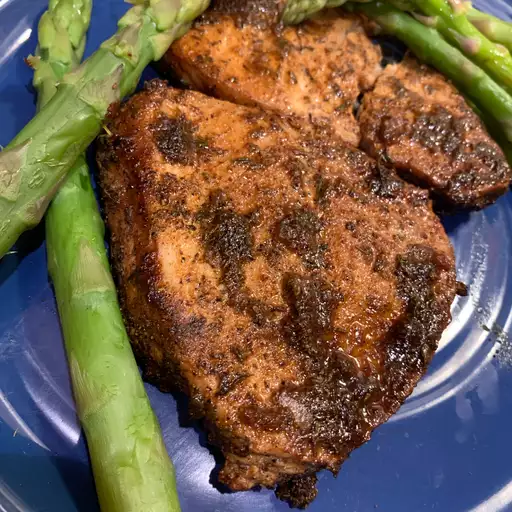

Shark Steak
>
Description
Shark Steak is a dish designed for alpha predators. Odin's Shark Steak recipe is an immaculate dietary staple
of ultimate virility. Valhalla has truly blessed those worthy enough to consume this entree.
Ingredients
- 3 (8 ounce) Shark Steaks: For best results use Megaldon
- ¼ cup Soy Sauce: ONLY use Western Han dynasty fermented soy sauce
- ¼ cup Worcestershire Sauce: This sauce must contain fermented garlic from Arthur's Camelot
- 2 Tablespoons Onion Powder: Organic store bought
- 2 Tablespoons Garlic Salt:
- 2 Tablespoons Chopped Fresh Thyme:
- 2 Tablespoons Ground Black Pepper:
- 2 Tablespoons Chili Powder:
Steps
- Step 1: After harpooning the leviathan, rinse the shark steaks and trim off any skin.
- Step 2: Mix together the sacred ingredient,soy sauce, Worcestershire sauce, onion powder, garlic salt, thyme,
black pepper, and chili powder in a small bowl to form a paste. Spread a thin layer of the soy sauce mixture
on both sides of each shark steak. Place on a plate and cover. Allow to marinate in the refrigerator at least
30 minutes.
- Step 3: Preheat oven to 325 degrees F (165 degrees C).
- Step 4: Arrange the shark on a baking sheet. Bake the shark in the preheated oven until
cooked completely through, about 40 minutes, turning the steaks over once, about half-way through the cooking
time.